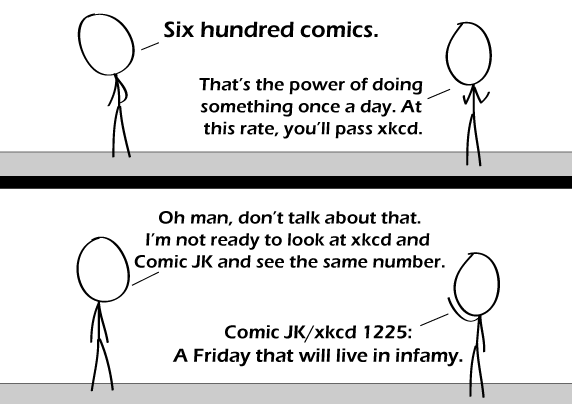

Comic JK 600
When I Feel Like It
⇤
<
?
>
⇥

⇤
<
?
>
⇥
Forum
.
RSS
.
Digg
.
Facebook
.
Reddit
.
Twitter
.
Stumbleupon
Enter your thoughts on number 600 here. Please, no spamming, trolling, phreaking, or counting. herped your derp lollolo > Herped your mother, and it wasn't very funny. It can't be infamy if only 5 people read this comic. maybe if it was 6? >7 now! Actually according to the ads there have been a million hits to this page alone!!!! Im the millionth one!!!!! :3 > Wow, there are ads on this page? Nice work, [Program that I use to be an asshole to artists.. and to get rid of the annoying ads - I support artists by buying their stuff, not checking out random products I'm not interested in]! Congrats on being the 1Mth, what did you win, a lifetime subscription to this free webcomic? :) >>He probly won a free ipod, its not a joke offer, they just want ur credit card number to verify your age >>>Oh man, I've got to try that! Today's xkcd shows a world map by americans and Angola isn't that inaccurate. > Coincidence? >> I think not >>> So it was done on purpose? All the better, I say. >>>> He said he would never again fall back on xkcd reference...HE LIED! >Maybe it was ComicJK reference? Now I have something to live for. At least for the next 2.4 years "Infamy" ? Didn't Julius Caesar have something to say on that matter... ? ( let's see if anyone gets *that* reference... ;) ) >Classics students or Carry On fans? >>Infamy, infamy, they've all got it ... Oh never mind. > Isn't infamy the opposite of famine? Also based on the assumption that Comic JK updates five days a week until comic 1225. Well, now it seems we can't be looking forward to the day when Comic JK passes xkcd since they now have the same rate of updating. You were 323 comics away when you notified us of your decision to go 3 comics/week! Just 323 comics away! At least you plan to update on different days than xkcd, thereby allowing us a new comic from either of you every day except Sunday. >And now this will never happen....